อัปเดตล่าสุด: 4 ตุลาคม 2569 (2026-10-04) · ระบบ stone_slab_inventory เวอร์ชัน 19.0.2.105.0 · ภาพหน้าจอทั้งหมดมาจากการทดลองใช้งานจริงบนระบบทดสอบ
บทนี้อธิบายเรื่อง Block ตั้งแต่ว่า Block คืออะไร ทำไมระบบคิดแบบนี้ ไล่ไปทีละขั้นตั้งแต่ซื้อเข้ามาจนถึงตัดเป็นแผ่น และสุดท้ายคือ "ถ้าเกิดเหตุการณ์แบบนี้ ระบบจะทำอะไร" ทุกภาพเป็นหน้าจอที่ทดลองใช้งานจริง ไม่ใช่ภาพจำลอง และทุกเงื่อนไขในบทนี้ผ่านการทดลองแล้ว
1. Block คืออะไร
Block คือหินก้อนดิบหนึ่งก้อนที่ซื้อเข้ามา ยังไม่ได้ตัด เป็นวัตถุดิบต้นทางของงานทั้งสาย: Block → ตัดเป็น Slab (แผ่น) → ขายหรือผลิตเป็นสินค้าสำเร็จรูป
BLK-26-0319)2. แนวคิดหลัก 5 ข้อ
- หนึ่งก้อนจริง = หนึ่ง Block ซื้อ 3 ก้อนต้องมี Block 3 เอกสาร ตัวเลข "จำนวน" ในใบสั่งซื้อ (PO) คือปริมาตรที่สั่งโดยประมาณ ไม่ใช่จำนวนก้อน
- ซื้อขายเป็นตัน แต่ระบบนับสต็อกเป็น ลบ.ม. ตัวเลขตันที่เห็นคำนวณจากปริมาตร ถ้าไม่ได้ชั่งจริงก็ใช้ค่านี้
- ของเข้าคลังตอนกด Validate ที่ใบรับของ เหมือนการรับของใน Odoo ปกติ ไม่มีปุ่ม "สร้าง Block" แยกที่ต้องจำอีกแล้ว
- ส่วนที่ระบบเราเพิ่มเอง ทำงานต่อท้ายขั้นตอนปกติ คือช่องกว้าง/ยาว/สูง, การตั้งเลข Lot, และการสร้างเอกสาร Block ส่วนตัวเลขสต็อกและมูลค่าเป็นของ Odoo เอง
- ขนาดผิดแก้ได้ แต่ต้องมีเหตุผลและมีประวัติ ระบบไม่ให้แก้ตัวเลขสต็อกตรงๆ
3. ภาพรวมขั้นตอน
นอกเหนือจากนี้มีอีก 2 เส้นทางที่เกิดได้: แก้ขนาด (ถ้าวัดผิด) และ คืนของ (ถ้าส่งคืนผู้ขาย)
4. ขั้นตอนทีละหน้าจอ
4.1 สั่งซื้อ (Purchase Order)
สร้างใบสั่งซื้อตามปกติ เลือกสินค้าที่เป็น Block ของหินชนิดนั้น ใส่จำนวน (ปริมาตรโดยประมาณ) และราคา ช่อง Qty (Ton) แสดงตันที่คำนวณให้ ตัวอย่างนี้สั่ง 4.00 ลบ.ม. = 10.80 ตัน
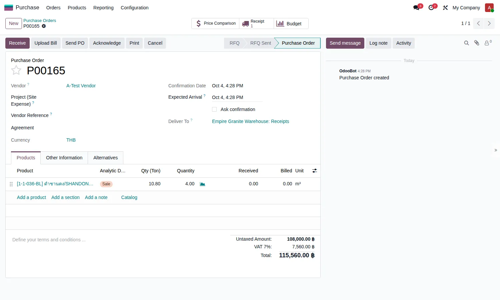
4.2 รับของ (Receipt) — ขั้นตอนที่สำคัญที่สุด
เมื่อยืนยันใบสั่งซื้อ ระบบสร้างใบรับของให้ สังเกตแถบสีฟ้าด้านบนที่บอกว่าเป็น "รับ Block" และบอกวิธีกรอก
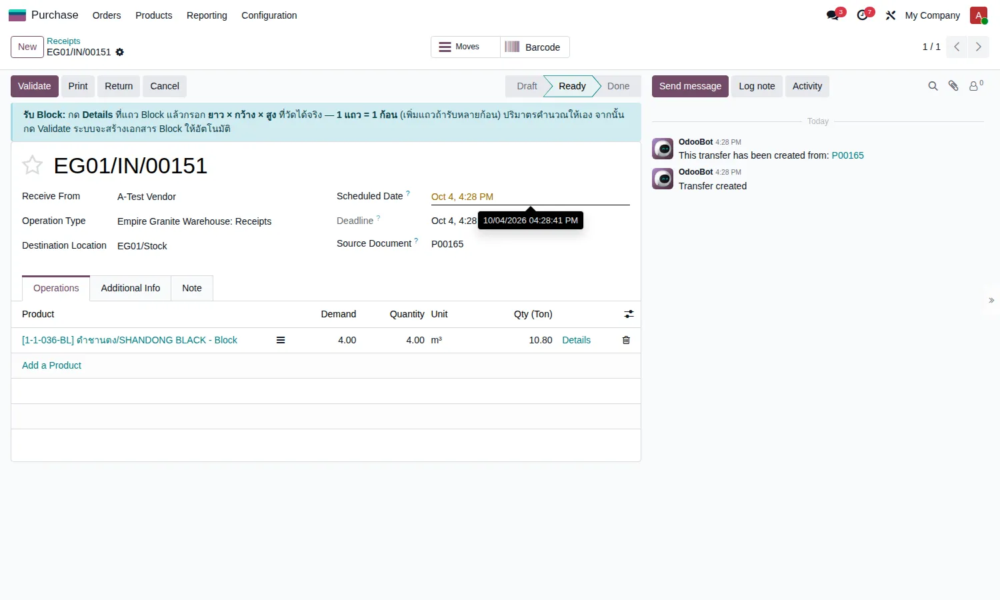
- กดคำว่า Details ที่แถวสินค้า จะเปิดหน้าต่าง Detailed Operations
- 1 แถว = 1 ก้อนจริง กรอก ยาว / กว้าง / สูง (เมตร) ของก้อนนั้น
- ถ้ามีหลายก้อน กด Add a line เพิ่มแถวทีละก้อน
- ช่อง Quantity ระบบคำนวณให้เอง (ล็อก พิมพ์ทับไม่ได้) และช่อง Qty (Ton) แสดงตันของแต่ละก้อน
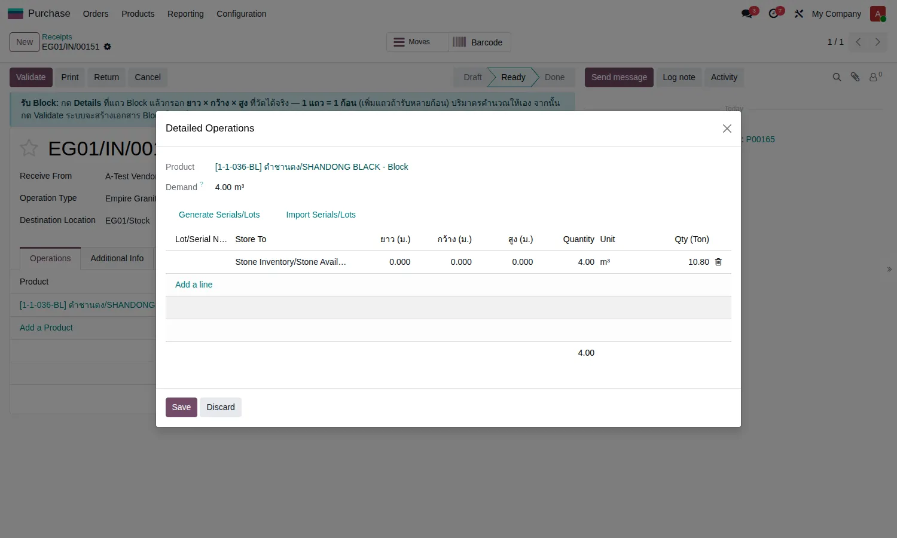
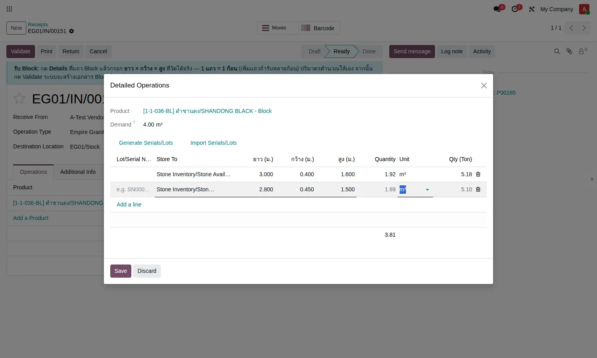
ตัวอย่าง: ก้อนที่ 1 ขนาด 3.00 × 0.40 × 1.60 ม. = 1.92 ลบ.ม. (5.18 ตัน) ก้อนที่ 2 ขนาด 2.80 × 0.45 × 1.50 ม. = 1.89 ลบ.ม. (5.10 ตัน) รวม 3.81 ลบ.ม.
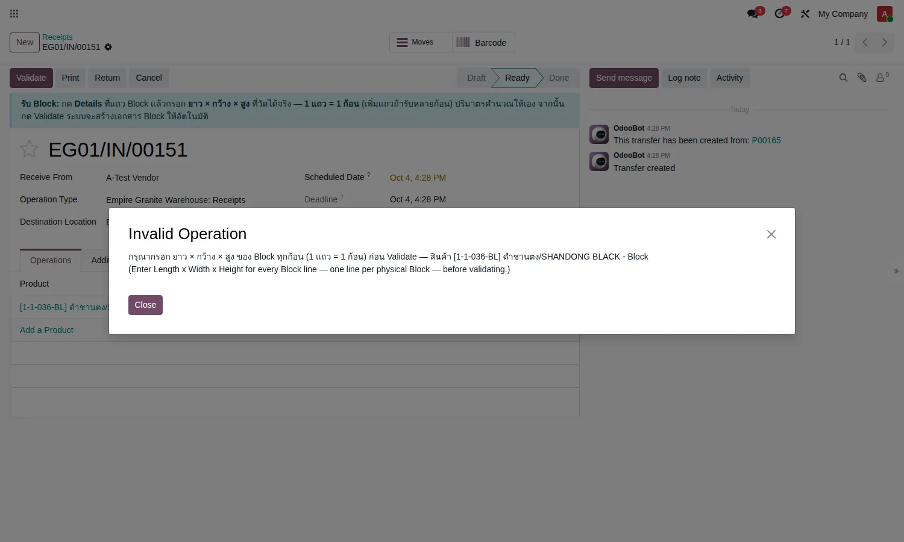
เมื่อกรอกครบแล้วกด Validate ถ้าปริมาตรที่รับจริงน้อยกว่าที่สั่ง (ตัวอย่างนี้สั่ง 4.00 รับ 3.81) Odoo จะถามเรื่อง Backorder:
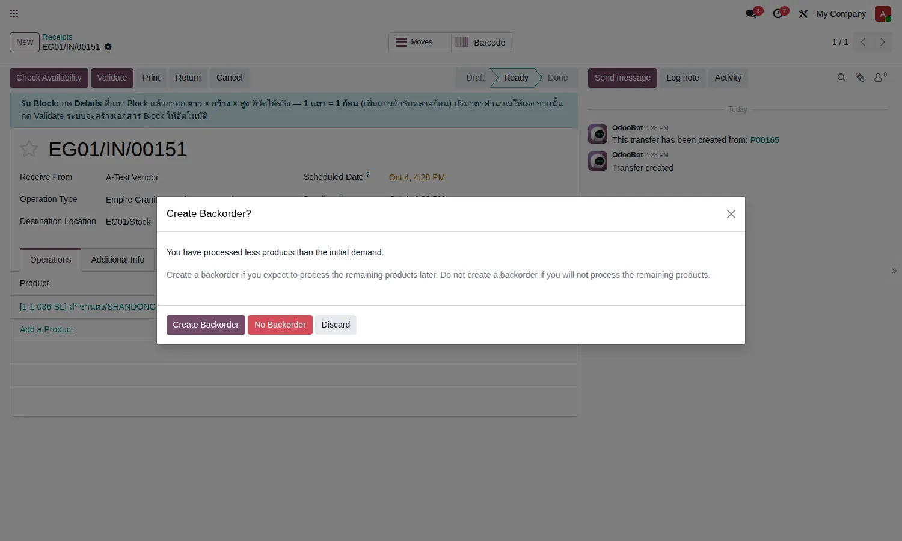
| ตัวเลือก | ใช้เมื่อ |
|---|---|
| Create Backorder | ผู้ขายจะส่งส่วนที่เหลือมาทีหลัง ระบบเปิดใบรับของใบใหม่ไว้รอ |
| No Backorder | ผู้ขายส่งครบแล้วเท่าที่จะส่ง ส่วนที่ขาดไม่มีมาอีก |
หลัง Validate ระบบทำให้อัตโนมัติ และขึ้นข้อความยืนยันที่มุมจอทีละก้อน:
- ตั้งเลข Lot ให้ทุกก้อน (เช่น
BLK-26-0319-BLK) - ย้ายของจาก "Vendors - Stone" เข้า Stone Inventory / Stone Available
- บันทึกมูลค่าตามราคาในใบสั่งซื้อ
- สร้างเอกสาร Block ให้ทุกก้อน พร้อมขนาด ผู้ขาย และใบสั่งซื้อที่มา
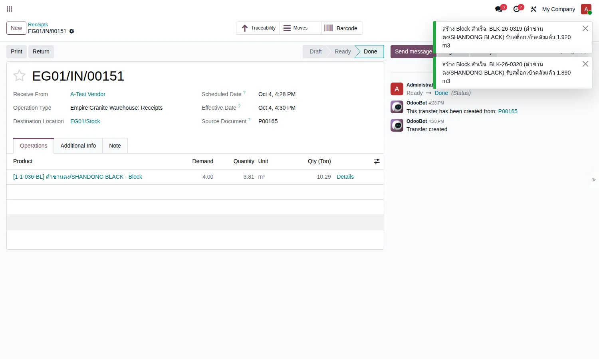
4.3 Block ในคลัง
ไปที่เมนู Stone Slab → Blocks จะเห็น Block ทั้งหมดเป็นการ์ด ตัวเลขท้ายการ์ดคือปริมาตรและตันที่เหลือ (ปกติระบบซ่อน Block ที่ใช้หมดแล้ว)
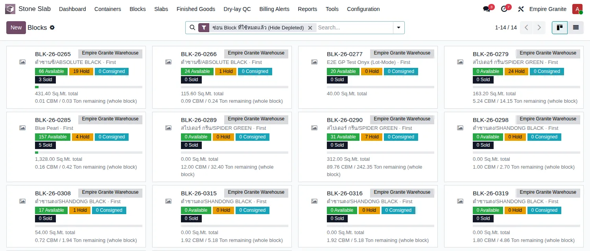
เปิด Block ดูรายละเอียด: ขนาด ปริมาตร น้ำหนัก ผู้ขาย ใบสั่งซื้อที่มา ราคาขาย ต้นทุนต่อ ลบ.ม. และจำนวนแผ่นที่คาดว่าจะตัดได้
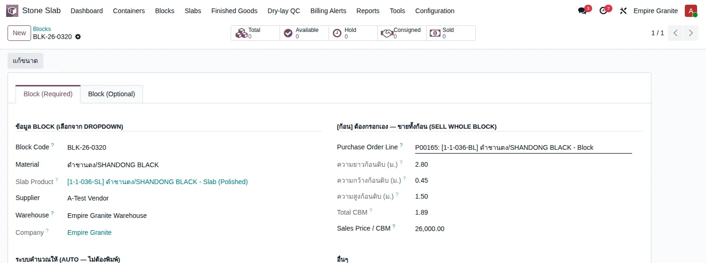
Block ที่เกิดจากใบรับของ ช่องขนาดจะถูกล็อก ถ้าต้องแก้ ให้ใช้ปุ่ม "แก้ขนาด" (หัวข้อ 4.5)
4.4 เก็บเงิน — ใบแจ้งหนี้ผู้ขาย (Vendor Bill)
ใบสั่งซื้อจะแสดงช่อง Received เป็นปริมาตรที่รับจริง (3.81) ไม่ใช่ 4.00 ที่สั่ง
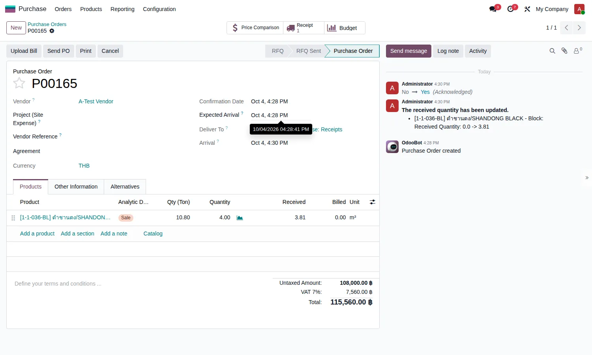
สร้างบิลที่ Accounting → Vendors → Bills → New เลือกผู้ขาย แล้วที่ช่อง Auto-Complete เลือกใบสั่งซื้อ ระบบดึงรายการมาให้ ตามปริมาตรที่รับจริง:
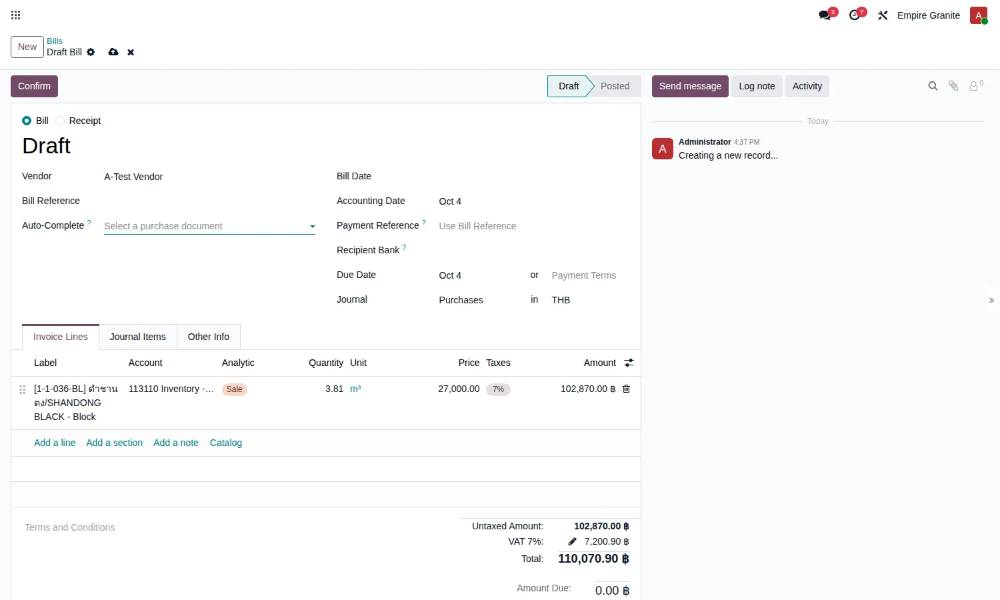
ตัวอย่าง: รับจริง 3.81 ลบ.ม. × 27,000 = 102,870 บาท (ไม่ใช่ 4.00 × 27,000 = 108,000)
4.5 แก้ขนาด Block (ถ้าวัดผิด)
เปิดหน้า Block กดปุ่ม แก้ขนาด (มุมซ้ายบน) ปุ่มนี้ใช้ได้เฉพาะผู้มีสิทธิ์ Inventory Administrator หน้าต่างจะแสดงขนาดเดิมและขนาดใหม่เทียบกัน
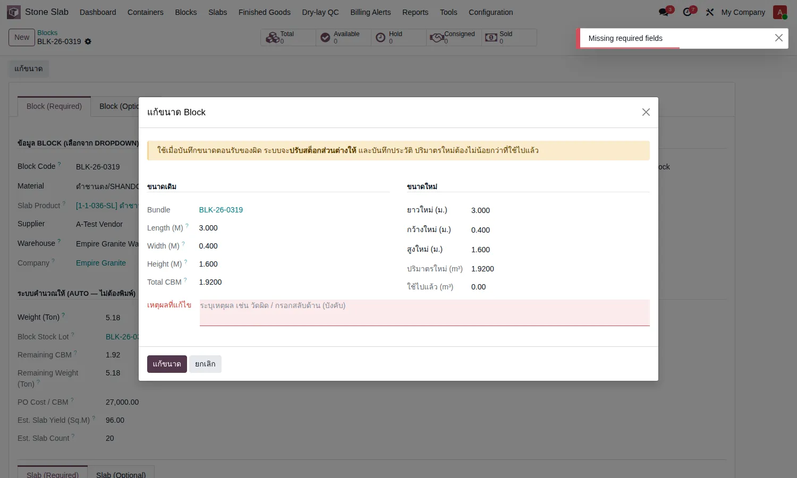
ต้องระบุเหตุผลทุกครั้ง ถ้าเว้นว่าง ระบบแจ้ง "Missing required fields" และไม่บันทึก
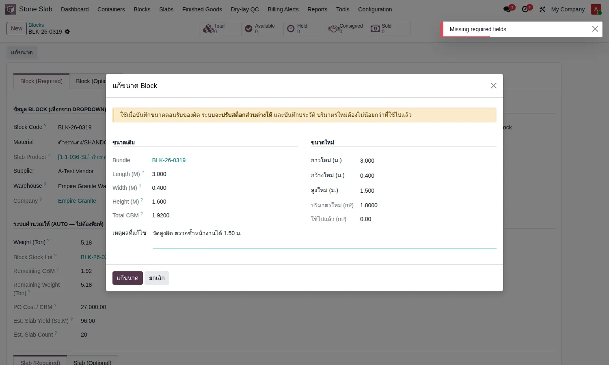
เมื่อกดแก้ขนาด ระบบจะ:
- เปลี่ยนขนาดและปริมาตรของ Block
- ปรับสต็อกส่วนต่างให้ (ตัวอย่างนี้สูง 1.60 → 1.50 ปริมาตร 1.92 → 1.80 ปรับลด 0.12)
- บันทึกประวัติ ใครแก้ เมื่อไร จากอะไรเป็นอะไร เพราะอะไร ที่แท็บ ประวัติแก้ขนาด
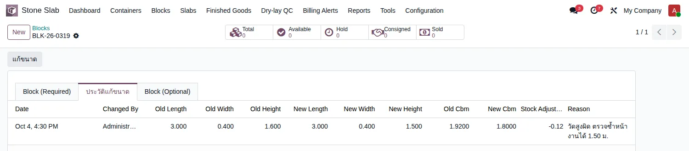
| เงื่อนไข | ผล |
|---|---|
| ไม่ใช่ Inventory Administrator | ไม่เห็นปุ่ม ใช้ไม่ได้ |
| ไม่ใส่เหตุผล | บันทึกไม่ได้ |
| ปริมาตรใหม่น้อยกว่าที่ตัดไปแล้ว | ไม่อนุญาต |
| ปริมาตรลดลง แต่ของใน Stone Available ไม่พอจะหักส่วนต่าง | ไม่อนุญาต ต้องเคลียร์ของที่ค้างที่อื่นก่อน |
| เงื่อนไขครบ | แก้ได้ ปรับสต็อกส่วนต่าง และบันทึกประวัติ |
4.6 สั่งตัดเป็นแผ่น (Cut Order)
ใบตัดสร้างจากใบสั่งขายที่ต้องการแผ่น ใช้ปริมาตรจาก Block ใน Stone Available เมื่อกด Complete Cut ได้ Slab ตามจำนวนแผ่นจริง ที่เหลือของ Block ลดลงตามที่ตัด ระบบมีแถบเตือนสีเหลืองเมื่อ ขนาดแผ่นที่ตั้งไว้ไม่พอดีกับ Block (เตือนเฉยๆ ไม่ห้าม ให้ตรวจก่อนตัดจริง) มี 2 กรณี:
(ก) ความหนารวมของแผ่นทั้งหมดเกินความกว้างของ Block
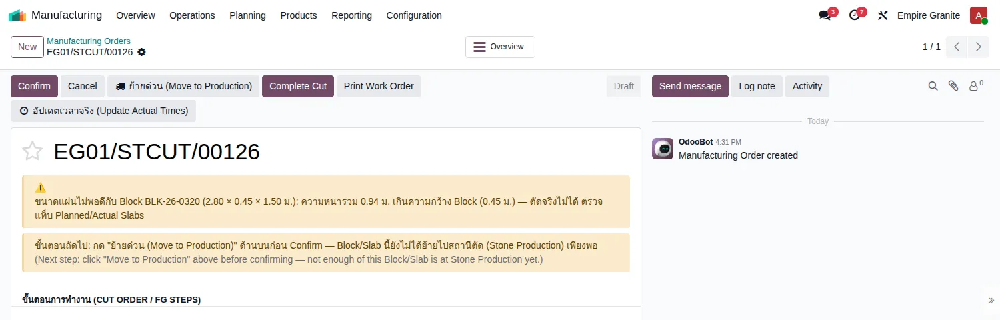
(ข) ความยาวหรือความสูงของแผ่นใหญ่กว่า Block
4.7 คืน Block ให้ผู้ขาย
ใบรับของที่ Validate แล้ว ยกเลิกไม่ได้ ถ้ากดยกเลิก ระบบแจ้งว่า "You cannot cancel a stock move that has been set to Done" ให้ใช้การ คืนของ (Return) แทน:
- เปิดใบรับของที่ Done กดปุ่ม Return
- กด Return All (ถ้าคืนทั้งหมด) หน้าต่างเริ่มต้นแสดง 0.00 ซึ่งเป็นปกติของ Odoo
- ระบบสร้างใบคืน กด Validate
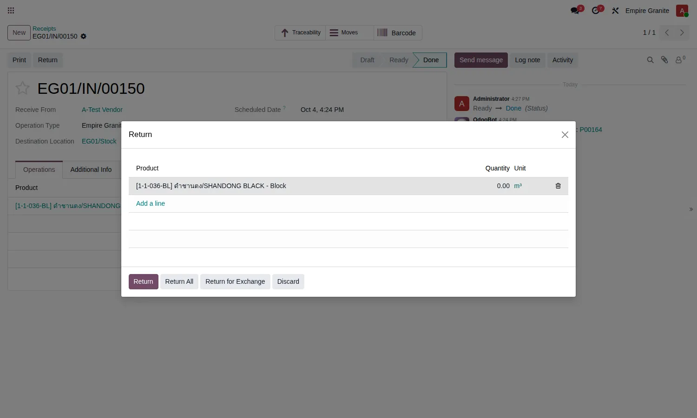
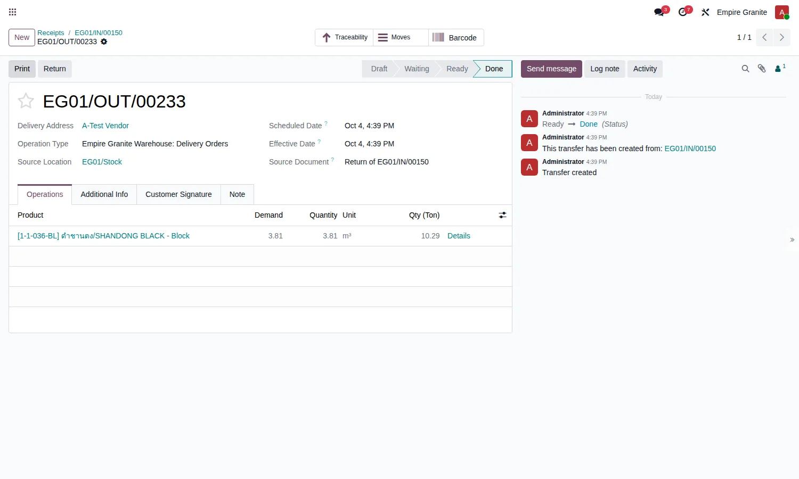
ผลลัพธ์: สต็อกถูกหักออกจาก Stone Available, ช่อง Received ในใบสั่งซื้อกลับเป็น 0 และ เอกสาร Block ยังอยู่เป็นประวัติ แต่คงเหลือ 0.00
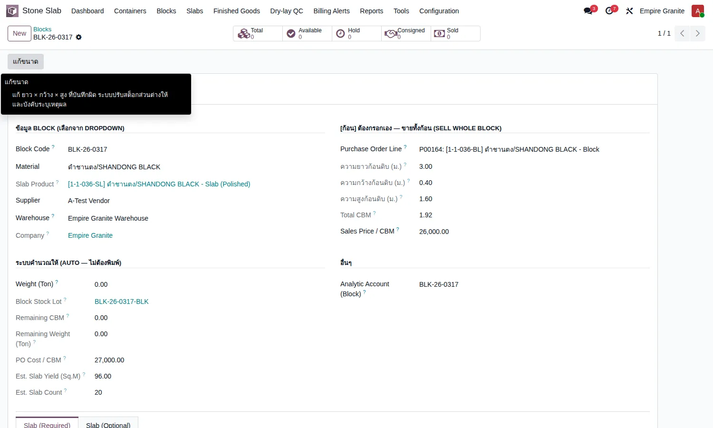
5. สรุปเงื่อนไขทั้งหมด
5.1 ตอนรับของ
| สถานการณ์ | ระบบทำอย่างไร |
|---|---|
| กด Validate โดยไม่กรอก ยาว/กว้าง/สูง | ไม่ให้ผ่าน แจ้งให้กรอกก่อน |
| เพิ่มแถวก้อนที่ 2, 3 ในหน้า Detailed Operations | รับครบทุกก้อนที่กรอกขนาดไว้ (ทดลองแล้ว ได้ Block 2 เอกสารจากแถว 2 แถว) |
| รับน้อยกว่าที่สั่ง | Odoo ถามสร้าง Backorder หรือไม่ ตามหัวข้อ 4.2 |
| พิมพ์ทับช่อง Quantity ของ Block | ทำไม่ได้ ช่องล็อก ใช้ปริมาตรจากขนาดเสมอ |
| ใบรับของมีสินค้าอื่นปน | กฎ Block ใช้กับแถว Block เท่านั้น แถวอื่นทำตามเดิม |
| รับสินค้าที่เป็น Slab (แผ่น) ผ่านใบสั่งซื้อ | ยังกันไว้ตามกฎเดิม Slab ไม่รับผ่านทางนี้ |
5.2 ขนาด ปริมาตร น้ำหนัก
| หัวข้อ | กฎ |
|---|---|
| ปริมาตร | กว้าง × ยาว × สูง เสมอ สต็อกเก็บทศนิยม 2 ตำแหน่ง (เป็นธรรมชาติของ Odoo) ขนาดแต่ละด้านเก็บ 3 ตำแหน่ง |
| ตัน | ปริมาตร × ความหนาแน่นของหิน ระบบกรอกให้ตอนรับของ ถ้าชั่งจริงไม่ตรงให้แก้ที่หน้า Block |
| ราคาซื้อ | ต้นทุนต่อ ลบ.ม. = ยอดเงินในใบสั่งซื้อ ÷ ปริมาตรที่สั่ง |
5.3 หลายบริษัท
ทดลองรับ Block ทั้งบริษัท Empire Granite (EG) และ Empire Stone (ES) บนระบบทดสอบ ผลคือ แต่ละบริษัทเข้าคลังของบริษัทตัวเอง (Stone Available ของคลังนั้น) Block สังกัดบริษัทที่รับ และบิลตามที่รับจริงเหมือนกัน
5.4 ใครทำอะไรได้
| งาน | สิทธิ์ที่ต้องมี |
|---|---|
| สร้างใบสั่งซื้อ | Purchase User ขึ้นไป |
| รับของ / กรอกขนาด / Validate | Inventory User ขึ้นไป |
| ดูและใช้งานเอกสาร Block | EMG-O Internal User |
| แก้ขนาด Block | Inventory Administrator เท่านั้น (ปุ่มซ่อนสำหรับคนอื่น) |
หมายเหตุ: การซ่อนปุ่มสำหรับผู้ที่ไม่ใช่ Inventory Administrator ตั้งตามที่ออกแบบ ยังไม่ได้ลองล็อกอินด้วยผู้ใช้ระดับต่ำกว่าเพื่อยืนยันบนหน้าจอ
6. สิ่งที่เปลี่ยนจากเดิม
| เดิม | ตอนนี้ |
|---|---|
| ต้องกดปุ่มสร้าง Block แยก (ผู้ใช้มักลืม) | Validate ใบรับของ Block ก็เกิดให้เอง |
| ต้องยกเลิกใบรับของ แล้วสร้าง Block เอง | ไม่ต้องยกเลิกอีก |
| กรอกขนาดที่หน้า Block | กรอกที่ใบรับของ ตอนวัดจริง |
| แก้ขนาดได้ตรงๆ ไม่มีบันทึก | แก้ผ่านปุ่ม มีเหตุผลและประวัติ |
| บิลผู้ขายดึงตามที่สั่ง | ตามที่รับจริง |
7. คำถามที่พบบ่อย
ใส่ 3 ในช่องจำนวนของใบสั่งซื้อ คือซื้อ 3 ก้อนหรือเปล่า
ไม่ใช่ครับ คือปริมาตร 3 ลบ.ม. โดยประมาณ จำนวนก้อนมาจากจำนวนแถวที่กรอกที่ใบรับของ
กรอกขนาดผิดแล้ว Validate ไปแล้ว ทำอย่างไร
ใช้ปุ่ม "แก้ขนาด" ที่หน้า Block (หัวข้อ 4.5) ต้องเป็น Inventory Administrator และระบุเหตุผล
รับของแล้วผู้ขายส่งผิด อยากคืนทั้งก้อน
ใช้ Return ที่ใบรับของ (หัวข้อ 4.7) Block จะคงเหลือ 0 และยังเก็บเป็นประวัติ
ทำไมน้ำหนักตันไม่ตรงกับที่ชั่ง
ตันที่เห็นคำนวณจากปริมาตร × ความหนาแน่น ถ้าชั่งจริงได้ต่างจากนี้ ให้แก้ช่อง Weight (Ton) ที่หน้า Block (ต้นทุนยังคิดตาม ลบ.ม. ไม่เปลี่ยน)
บิลผู้ขายต้องจ่ายตามตันหรือ ลบ.ม.
บิลคิดตามหน่วยของสินค้า Block ใน PO ซึ่งตอนนี้ราคาต่อ ลบ.ม. × ปริมาตรที่รับจริง ตัวเลขตันแสดงเพื่ออ้างอิง
8. ข้อจำกัดที่ทราบ
- คืน Block ที่ถูกตัดบางส่วนไปแล้ว ยังไม่ได้ทดลอง
- ใบตัดเก่าบางใบ (ก่อน 4 ตุลาคม 2569) หักสต็อกจากที่ผิด ทีมดูแลระบบจะทยอยตรวจแก้
- สิทธิ์ผู้ใช้ระดับต่ำ ยังไม่ได้ลองล็อกอินยืนยันบนหน้าจอ
- บิลของใบสั่งซื้อที่เปิดก่อน 4 ตุลาคม 2569 อาจยังตั้งค่าเป็น "ตามที่สั่ง" ให้ตรวจก่อน Confirm